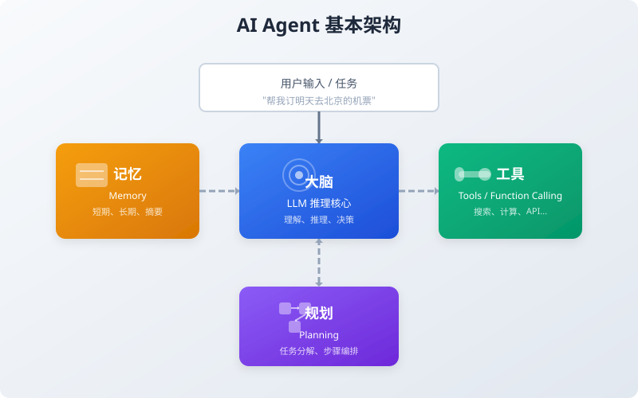
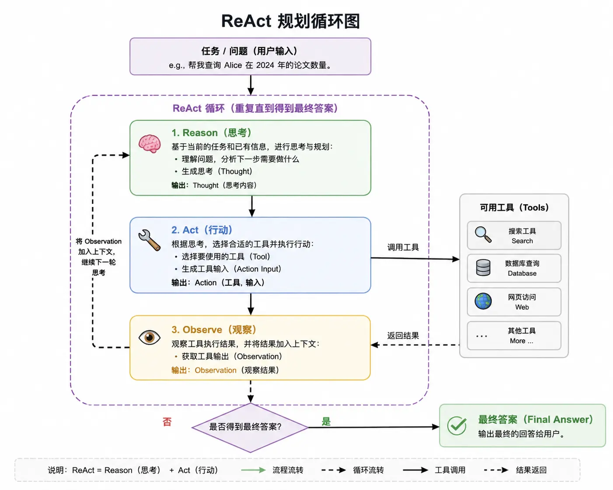

AI Agent (Agente Inteligente)
Puede que ya estés acostumbrado a esta interacción: haces una pregunta y la IA da una respuesta.
-
Le pides que escriba un artículo, y escribe un artículo.
-
Le pides que traduzca una frase, y traduce una frase.
En este modo, la IA es más como un asesor: te da consejos, pero no hace las cosas directamente.
¿Pero qué pasa si la tarea es un poco más compleja? Por ejemplo: ayúdame a consultar el clima de mañana en Pekín; si la temperatura supera los 25 grados, recomiéndame una camisa de manga corta con un presupuesto de menos de 300 yuanes, y luego organiza el resultado en un correo y envíalo a mi jefe.
Con una IA conversacional normal, tienes que dividirlo en varios pasos:
-
Paso 1: Consultar el clima de mañana en Pekín.
-
Paso 2: Si supera los 25 grados, recomendar camisas de manga corta de menos de 300 yuanes.
-
Paso 3: Escribir un correo al jefe con el contenido...
Cada paso requiere que lo avances manualmente.
而 AI Agent (Agente Inteligente)La idea es: solo necesitas decir una vez "ayúdame a hacer esto", y él mismo se encargará de hacer todo lo demás.
Automáticamente determinará qué necesita hacer, qué herramientas llamar, en qué orden ejecutarlas y cómo ajustarse cuando encuentre problemas, hasta completar la tarea.

Entendido de forma simple: el LLM normal es el estratega, que te ayuda a planificar; el AI Agent es el ejecutor, que recibe el objetivo y se pone a hacer las cosas por sí mismo.
¿Qué es un Agente de IA?
Un AI Agent es un sistema autónomo capaz de percibir el entorno, tomar decisiones y emprender acciones.
Una definición más académica es:Un Agent es una entidad situada en un entorno, que percibe el entorno a través de sensores y actúa sobre el entorno mediante actuadores para lograr una serie de objetivos.。
Esta definición suena un poco abstracta; vamos a desglosarla en palabras sencillas.
Agent vs LLM normal
Primero veamos una tabla comparativa:
| Característica | LLM normal | AI Agent |
|---|---|---|
| Modo de interacción | Pregunta y respuesta, impulsado por el usuario | Ejecución autónoma, impulsado por objetivos |
| Límite de capacidades | Solo las capacidades integradas del modelo | Puede ampliar sus capacidades mediante herramientas |
| Memoria | Contexto de la conversación (limitado) | Memoria a corto plazo + largo plazo |
| Planificación | Ninguna (o requiere guía del usuario) | Descomposición y planificación autónoma de tareas |
| Bucle de retroalimentación | Ninguno (generación única) | Bucle Observar-Pensar-Actuar |
Pongamos un ejemplo concreto: "Ayúdame a reservar un vuelo de Shanghai a Pekín para mañana, con un precio inferior a 1500 yuanes."
Un LLM normal podría responder: "De acuerdo, puedo ayudarte a escribir un código para consultar vuelos, o decirte a qué sitio web deberías acudir." Pero no irá realmente a consultar vuelos, y mucho menos hará la reserva por ti.
Mientras que un Agent competente hará:
-
1. Entender el objetivo: reservar un vuelo Shanghai→Pekín para mañana, dentro de 1500 yuanes.
-
2. Decidir la acción: necesito llamar a la API de consulta de vuelos.
-
3. Ejecutar la acción: llamar a la API y obtener la lista de vuelos.
-
4. Observar los resultados: se obtienen 10 vuelos, de los cuales 3 están dentro de 1500 yuanes.
-
5. Reflexionar de nuevo: ¿cuál elegir? Quizás necesite comprobar los horarios de salida y llegada, o preguntar las preferencias del usuario.
-
6. Continuar con la acción: podría llamar a otra API para consultar la puntualidad, o directamente recomendar opciones al usuario.
-
7. Completar la tarea: ayudar al usuario a seleccionar el asiento y generar el enlace del pedido.
¿Ves la diferencia?Un LLM normal te da una respuesta; un Agent te da un resultado.。
Capacidades principales del Agent
Un Agent completo suele tener las siguientes tres capacidades principales:
| Capacidad | Descripción | Analogía |
|---|---|---|
| Percepción (Perception) | Obtener información y retroalimentación del entorno | Ojos, oídos |
| Decisión (Decision) | Pensar qué hacer y cómo hacerlo | Cerebro |
| Acción (Action) | Ejecutar operaciones concretas | Manos, pies |
-
Percepción, es que el Agent puede ver lo que está sucediendo. Por ejemplo, el usuario envía un mensaje, una API devuelve un resultado, se añade un archivo al sistema de archivos: todas estas son entradas de percepción.
-
Decisión, es que el Agent, basándose en la información percibida, decide qué hacer a continuación. ¿Responder directamente al usuario? ¿Llamar a una herramienta? ¿Dividir una tarea grande en tareas pequeñas? Todo esto es decisión.
-
Acción, es que el Agent realmente ejecuta las decisiones. Llamar a la API de búsqueda, leer archivos, enviar correos, operar bases de datos: todas estas son acciones.
Arquitectura básica del Agent
Ahora veamos las cuatro "piezas estándar" del Agent: cerebro, herramientas, memoria y planificación.
Primero veamos un diagrama de arquitectura:

Cerebro: el LLM como núcleo de razonamiento
El cerebro del Agent suele ser un gran modelo de lenguaje, como GPT-4, Claude, Llama, etc.
Este LLM se encarga de:
-
1. Entender la intención del usuario: cuando el usuario dice "ayúdame a reservar un billete", ¿qué es lo que realmente quiere?
-
2. Tomar decisiones: ¿qué debo hacer a continuación?
-
3. Generar los parámetros de la llamada a la herramienta: para llamar a la API de consulta de vuelos, ¿qué parámetros se necesitan?
-
4. Organizar la respuesta final: ya hay suficiente información recopilada, ¿cómo dar al usuario un resumen claro?
El LLM es el núcleo del Agent, pero no es todo: al igual que el cerebro humano es importante, pero también se necesitan manos y pies para hacer las cosas.
Herramientas: expandir los límites de las capacidades de la IA
Un LLM nativo tiene dos limitaciones evidentes:
-
1. Fecha límite de conocimiento: no sabe lo que ocurrió después de terminar su entrenamiento.
-
2. Incapacidad de interacción: no puede leer archivos, consultar bases de datos ni llamar a APIs directamente.
Las herramientas (Tools) sirven para resolver estos problemas.
Tipos de herramientas comunes:
| Tipo de herramienta | Función | Ejemplo |
|---|---|---|
| Herramienta de búsqueda | Obtener información actualizada | Google Search、Bing Search |
| Herramienta de cálculo | Realizar operaciones matemáticas | Calculadora, Wolfram Alpha |
| Operaciones con archivos | Leer y escribir archivos locales | Leer PDF, escribir CSV |
| Llamadas a API | Interactuar con sistemas externos | Reservar vuelos, enviar correos, consultar el clima |
| Consultas a bases de datos | Almacenar y recuperar datos estructurados | Consultas SQL, búsqueda vectorial |
| Ejecución de código | Ejecutar código para resolver problemas | Python REPL、Jupyter |
Dar herramientas al Agent es como darle a una persona una computadora: pasa de solo pensar a poder hacer.
Memoria: memoria a corto plazo vs. largo plazo
El LLM es amnésico por naturaleza: cada conversación es completamente nueva, a menos que le introduzcas el contexto.
Mientras que un Agent necesita recordar muchas cosas:
Memoria a corto plazo: ¿qué dijo el usuario hace un momento? ¿Qué herramienta llamé en el paso anterior? ¿Qué resultado obtuve?
-
Memoria a largo plazo: ¿Cuáles son las preferencias del usuario? ¿Cómo se manejaron tareas similares en el pasado? ¿Qué lecciones se aprendieron?
Implementaciones comunes de un sistema de memoria:
| Tipo de memoria | Contenido almacenado | Método de implementación |
|---|---|---|
| Memoria a corto plazo | Historial de conversación de la sesión actual, pasos intermedios | Ponerlo directamente en la ventana de contexto del LLM |
| Memoria a largo plazo | Preferencias del usuario, tareas históricas, documentos de conocimiento | Base de datos vectorial + búsqueda por similitud |
| Memoria de resúmenes | Resumen histórico comprimido | Hacer que el LLM genere resúmenes periódicamente |
Un buen sistema de memoria hace que el Agent parezca recordarte, en lugar de que cada vez sea como la primera vez que te ve.
Planificación: descomposición de tareas
Las tareas complejas no se completan en un solo paso; el Agent necesita poder dividir un objetivo grande en pasos pequeños.
Por ejemplo: ayúdame a organizar una fiesta de cumpleaños para 10 personas.
El Agent podría planificarlo así:
-
1. Primero preguntar: ¿cuál es el presupuesto? ¿cuándo? ¿dónde? ¿qué preferencias tiene el homenajeado?
-
2. Luego: buscar lugares cercanos.
-
3. Después: diseñar el menú.
-
4. A continuación: elaborar la lista de compras.
-
5. Finalmente: generar el programa de actividades.
Estrategias comunes de planificación:
-
Cadena de pensamiento (Chain-of-Thought): pensar paso a paso con claridad, qué hacer primero y qué después.
-
Árbol de pensamiento (Tree-of-Thought): considerar simultáneamente múltiples caminos posibles y elegir el óptimo.
-
Reflexión (Reflection): después de hacer un paso, volver a mirarlo para ver si hay problemas o si necesita ajustes.
Llamada de herramientas: Tool Use / Function Calling
La llamada a herramientas es la capacidad más básica y más importante del Agent.
Empecemos por explicar qué es.
¿Qué es Function Calling?
En pocas palabras:Function Calling es que el LLM genera un JSON estructurado que indica qué función quiere llamar y qué parámetros pasar.。
No es que el LLM ejecute realmente esa función; solo te dice que quiere llamarla, la ejecución la tienes que hacer tú.
El flujo completo suele ser así:
-
1. Le dices al LLM: "Aquí hay algunas funciones que puedes llamar; el nombre, los parámetros y la función de cada una son..."
-
2. El usuario envía un mensaje: "Ayúdame a consultar el clima de Beijing para mañana."
-
3. El LLM responde: "Quiero llamar a la función get_weather con los parámetros city='Beijing', date='mañana'."
-
4. Tú llamas a esa función (realmente consultas la API del clima) y obtienes el resultado.
-
5. Le devuelves el resultado al LLM: "La llamada a la función anterior devolvió: temperatura 25 grados, despejado."
-
6. Basándose en ese resultado, el LLM da una respuesta en lenguaje natural al usuario: "Mañana en Beijing estará despejado, con 25 grados, muy agradable."
¿Ves? El LLM se encarga de pensar; tú te encargas de ejecutar.
Definición del JSON Schema de la herramienta
Para que el LLM llame herramientas, primero debes decirle qué herramientas hay disponibles.
Ese proceso de informarle consiste en describir las funciones con JSON Schema.
Veamos un formato estándar de definición de funciones:
Ejemplo
tool_definition = {
"type": "function",
"function": {
"name": "get_weather", # Nombre de la función
"description": "Consultar el clima de una ciudad específica en una fecha específica", # Descripción del propósito de la función, el LLM mirará esto
"parameters": {
"type": "object",
"properties": {
"city": {
"type": "string",
"description": "Nombre de la ciudad, por ejemplo 'Beijing', 'Shanghái', 'Shenzhen'",
},
"date": {
"type": "string",
"description": "Fecha, con formato YYYY-MM-DD, por ejemplo '2024-06-18'",
},
"unit": {
"type": "string",
"enum": ["celsius", "fahrenheit"],
"description": "Unidad de temperatura, Celsius o Fahrenheit, por defecto Celsius",
},
},
"required": ["city", "date"], # Parámetros obligatorios
},
},
}
# Otra herramienta: búsqueda
search_tool = {
"type": "function",
"function": {
"name": "web_search",
"description": "Buscar la información más reciente en Internet, adecuado para consultar noticias, datos en tiempo real y conocimientos desconocidos",
"parameters": {
"type": "object",
"properties": {
"query": {
"type": "string",
"description": "Palabra clave o pregunta de búsqueda",
},
"num_results": {
"type": "integer",
"description": "Cuántos resultados devolver, por defecto 5",
"default": 5,
},
},
"required": ["query"],
},
},
}
# Otra herramienta: calculadora
calculator_tool = {
"type": "function",
"function": {
"name": "calculate",
"description": "Realizar cálculos matemáticos, admite suma, resta, multiplicación, división, potencias, etc.",
"parameters": {
"type": "object",
"properties": {
"expression": {
"type": "string",
"description": "Expresión matemática, por ejemplo '25 * 4 + 10', 'sqrt(16)'",
},
},
"required": ["expression"],
},
},
}
print(f"Se han definido {len([tool_definition, search_tool, calculator_tool])} herramientas: get_weather, web_search, calculate")
# Salida: se han definido 3 herramientas: get_weather, web_search, calculate
Puntos clave:
-
description es muy importante: el LLM se basa en esta descripción para entender para qué sirve la herramienta y cuándo usarla.
-
Los parámetros también deben describirse con claridad: por ejemplo, si unit tiene una restricción enum, el LLM sabrá que solo puede elegir entre esos dos valores.
-
required marca los campos obligatorios: el LLM se asegurará de que esos parámetros siempre tengan valor.
Práctica de código: agregar herramientas de búsqueda y cálculo a la IA
Ahora escribamos un ejemplo completo y ejecutable.
Para la demostración, simulamos el flujo completo de Function Calling con Python.
Ejemplo
# Una demostración simplificada de llamada a herramientas del Agent
# No se necesita una API Key real, se usa data simulada para la demostración
# ============================================
import json
import random
from typing import Dict, Any, List, Optional
class SimpleAgent:
"""Una clase simple de demostración de Agent"""
def __init__(self):
# Registrar las herramientas disponibles
self.tools = self._define_tools()
# Historial de conversación (memoria)
self.messages: List[Dict] = []
def _define_tools(self) -> List[Dict]:
"""Definir todas las herramientas disponibles"""
return [
{
"name": "web_search",
"description": "Buscar en Internet la información más reciente",
"parameters": {
"query": {"type": "string", "description": "Palabra clave de búsqueda"},
},
"required": ["query"],
},
{
"name": "calculate",
"description": "Realizar cálculo matemático",
"parameters": {
"expression": {"type": "string", "description": "Expresión matemática"},
},
"required": ["expression"],
},
{
"name": "get_weather",
"description": "Consultar el clima",
"parameters": {
"city": {"type": "string", "description": "Nombre de la ciudad"},
"date": {"type": "string", "description": "Fecha"},
},
"required": ["city", "date"],
},
]
def _call_tool(self, tool_name: str, parameters: Dict[str, Any]) -> str:
""" (Simulado) Llamar a la herramienta y devolver el resultado"""
print(f" [Llamada a herramienta] {tool_name}({parameters})")
if tool_name == "web_search":
query = parameters["query"]
# Resultado de búsqueda simulado
results = {
"runoob": "菜鸟教程 (runoob) es un sitio web de aprendizaje de programación que ofrece una gran cantidad de tutoriales y ejemplos.",
"Clima en Beijing el 18 de junio de 2024": "Beijing 2024-06-18: despejado, 25°C, humedad 45%.",
"Población de Shanghái": "La población residente de Shanghái en 2024 es de aproximadamente 24,89 millones.",
}
return results.get(query, f"Resultado de búsqueda: no se encontró información exacta para '{query}', este es un resultado simulado.")
elif tool_name == "calculate":
expr = parameters["expression"]
try:
# Nota: no uses eval en producción, esto es solo una demostración
result = eval(expr, {"__builtins__": None}, {
"sqrt": lambda x: x**0.5,
"pow": pow,
})
return f"Resultado del cálculo: {expr} = {result}"
except Exception as e:
return f"Error de cálculo: {e}"
elif tool_name == "get_weather":
city = parameters["city"]
date = parameters["date"]
# Datos meteorológicos simulados
weathers = ["Despejado", "Nublado", "Lluvia ligera", "Cubierto"]
temp = random.randint(15, 35)
return f"{city} {date}：{random.choice(weathers)}，{temp}°C"
else:
return f"Herramienta desconocida: {tool_name}"
def _decide_action(self, user_input: str) -> Dict[str, Any]:
"""
(Simulado) Proceso de decisión del LLM
En un proyecto real, aquí se llamaría a una API de LLM real.
"""
# Aquí se simula con reglas simples; en un escenario real se debería usar un LLM
if "Buscar" in user_input or "Consulta" in user_input or "Qué es" in user_input:
# Extraer término de búsqueda (simulación simple)
query = user_input.replace("Buscar", "").replace("Consulta", "").replace("Qué es", "").strip()
if not query:
query = "runoob"
return {
"action": "call_tool",
"tool": "web_search",
"parameters": {"query": query},
}
elif "Calcular" in user_input or "es igual a" in user_input:
# Extraer expresión (simulación simple)
return {
"action": "call_tool",
"tool": "calculate",
"parameters": {"expression": "25 * 4 + 10"}, # Valor fijo de ejemplo
}
elif "clima" in user_input:
return {
"action": "call_tool",
"tool": "get_weather",
"parameters": {"city": "Beijing", "date": "2024-06-18"},
}
else:
return {
"action": "respond",
"content": "Bien, te ayudo a resolver este problema." + user_input,
}
def run(self, user_input: str) -> str:
"""Ejecutar el Agent para procesar la entrada del usuario"""
print(f"[Entrada del usuario] {user_input}")
self.messages.append({"role": "user", "content": user_input})
# Primer paso: decidir qué hacer
decision = self._decide_action(user_input)
if decision["action"] == "call_tool":
# Segundo paso: llamar a la herramienta
tool_result = self._call_tool(decision["tool"], decision["parameters"])
self.messages.append({"role": "tool", "content": tool_result})
# Tercer paso: generar la respuesta final basada en el resultado de la herramienta
# (Aquí se hace una concatenación simple; en realidad debería generar el LLM)
final_response = f"Según mi consulta: {tool_result}\n\n¡Espero que esta información te sea útil!"
self.messages.append({"role": "assistant", "content": final_response})
return final_response
else:
# Respuesta directa
self.messages.append({"role": "assistant", "content": decision["content"]})
return decision["content"]
# ============================================
# Probar este Agent
# ============================================
agent = SimpleAgent()
print("=" * 60)
response1 = agent.run("Buscar qué es runoob")
print(f"[Respuesta del Agent]"\n{response1}")
print("\n" + "=" * 60)
response2 = agent.run("Ayúdame a consultar el clima de Beijing el 2024-06-18")
print(f"[Respuesta del Agent]"\n{response2}")
print("\n" + "=" * 60)
response3 = agent.run("Calcular 25 * 4 + 10")
print(f[Respuesta del agente]\n{response3}")
Aunque este ejemplo es sencillo, muestra el ciclo completo de Function Calling:
Comprensión → decisión → llamada a la herramienta → observación del resultado → generación de la respuesta.
En proyectos reales,_decide_actioneste paso se sustituye por una llamada real al LLM, permitiendo que el modelo decida qué herramienta usar y qué parámetros pasar.
Ciclo de planificación ReAct
Una vez que se tiene la capacidad de llamar a herramientas, el siguiente paso es: ¿cuándo detenerse?
Las tareas simples pueden completarse en un solo paso, pero las tareas complejas suelen requerir múltiples iteraciones.
Esto es lo que el marco ReAct pretende resolver.
Pensar → Actuar → Observar
El nombre ReAct proviene de la combinación de Reasoning (razonamiento) y Acting (acción).
Su idea central es simple: hacer que el agente, como una persona, piense un paso, actúe un paso, observe, y luego repita este ciclo hasta completar la tarea.
Veamos un diagrama de flujo:

Cada ciclo consta de tres pasos:
| Paso | Inglés | Qué hace |
|---|---|---|
| Pensar | Thought | ¿Qué necesito hacer ahora? ¿Por qué? |
| Actuar | Action | Llamar a la herramienta para ejecutar una operación concreta |
| Observar | Observation | Registrar el resultado de la acción |
Luego se vuelve a pensar: según el resultado observado, se decide qué hacer a continuación.
Este ciclo continúa hasta que el agente determina que la tarea está completa; entonces sale del ciclo y ofrece la respuesta final.
Veamos cómo funciona ReAct con un ejemplo concreto:
-
Pregunta del usuario: ¿En qué año se fundó SpaceX? ¿Cómo se llama su primer cohete que alcanzó exitosamente la órbita?
-
Pensamiento 1: Necesito buscar el año de fundación de SpaceX y el modelo de su primer cohete que logró un lanzamiento orbital. Esta información puede provenir de distintas fuentes; lo mejor es realizar una búsqueda con palabras clave que cubra ambas.
-
Acción 1: Llamar a web_search para consultar "SpaceX año de fundación primer cohete orbital".
-
Observación 1: El resumen de los resultados de búsqueda muestra: "SpaceX (Space Exploration Technologies Corp.) fue fundada en 2002 por Elon Musk. Su primer cohete en alcanzar exitosamente la órbita terrestre fue el Falcon 1, que logró el éxito en su cuarto vuelo de prueba el 28 de septiembre de 2008." (La información está completa y cubre las dos subpreguntas).
-
Pensamiento 2: Los resultados de búsqueda ya proporcionaron tanto el año de fundación (2002) como el primer cohete orbital (Falcon 1), sin ambigüedad y con información confiable. No se necesita búsqueda adicional.
-
Respuesta final: SpaceX fue fundada en 2002, y su primer cohete en alcanzar exitosamente la órbita fue el Falcon 1, que logró este hito el 28 de septiembre de 2008.
-
Explicación: ¿Ves? Cada paso tiene un claro "pensamiento", "acción" y "observación", y el agente decide por sí mismo cuándo detenerse. Aquí solo se necesitó 1 ronda de acciones para recopilar toda la información necesaria, por lo que se pasó directamente a la respuesta final, sin ciclos adicionales.
Condiciones de finalización del ciclo
El ciclo ReAct no puede ejecutarse indefinidamente; necesita condiciones de terminación.
Condiciones de terminación comunes:
| Condición de terminación | Descripción | Ejemplo |
|---|---|---|
| Tarea completada | El agente determina que ya ha recopilado suficiente información para responder la pregunta del usuario | "He encontrado la respuesta, ahora puedo responder" |
| Alcanzar el número máximo de pasos | Para evitar bucles infinitos, se establece un número máximo de iteraciones (por ejemplo, 10 pasos) | "Ya se han realizado 10 iteraciones, detención forzosa" |
| Interrupción del usuario | El usuario dice activamente "alto" o "suficiente" | "No hace falta buscar más, ya lo sé" |
| Fracaso determinado | El agente determina que la tarea no puede completarse | "He buscado varias veces y no encuentro información relevante" |
Al diseñar agentes, es imprescindible contar con la válvula de seguridad del "número máximo de pasos"; de lo contrario, podría dar vueltas en círculo sin detenerse nunca.
Diseño del sistema de memoria
Cuando un agente lleva mucho tiempo trabajando, se encuentra con un problema: la ventana de contexto no puede contener todo el historial de la conversación.
En ese momento se necesita un buen sistema de memoria.
Historial de conversación: memoria a corto plazo
La memoria más simple es guardar el historial de conversación completo.
Cada vez se envían todos los mensajes anteriores al LLM, de modo que este pueda recordar lo que acaba de suceder.
Pero esta forma tiene un inconveniente evidente: la ventana de contexto del LLM es limitada.
Por ejemplo, GPT-4 es de 8K o 32K, y Claude es de 200K; aunque es grande, no es infinito.
No hay problema cuando la conversación es corta, pero una vez que la conversación es muy larga, o cada llamada a herramienta devuelve mucho contenido, pronto ya no cabe.
Base de datos vectorial: memoria a largo plazo
Cuando hay demasiados recuerdos y no caben en el contexto, una solución habitual es:almacenar los recuerdos en una base de datos vectorial y, cuando se necesite, "recuperar" los relevantes.。
Este enfoque se llama RAG (Retrieval-Augmented Generation) y también es aplicable en agentes.
Flujo de trabajo:
-
1. Cada vez que se genera un recuerdo (lo que dice el usuario, el resultado devuelto por la herramienta, el pensamiento del agente), se convierte en un vector (embedding).
-
2. Se almacena ese vector en la base de datos vectorial.
-
3. Cuando el agente necesita recordar, convierte también la pregunta actual en un vector.
-
4. Busca en la base de datos vectorial los recuerdos "más similares".
-
5. Solo coloca esos recuerdos relevantes en el contexto del LLM.
De este modo, incluso si hay diez mil recuerdos históricos, solo es necesario extraer y usar los más relevantes.
Memoria comprimida mediante resúmenes
Otra opción de optimización de memoria:No almacenar el texto completo de la conversación; el modelo grande genera periódicamente resúmenes concisos de las sesiones pasadas y solo se persiste el contenido del resumen.。
Conversación larga original:
Usuario: Ayúdame a consultar el clima.
-
Agente: ¿Qué ciudad?
-
Usuario: Beijing.
-
Agente: ¿Qué día?
-
Usuario: Mañana.
-
……
Resumen comprimido:
用户需要查询北京明日天气，Agent 先后确认城市与日期，用户明确查询时间为明天。
Este método puede reducir en gran medida el gasto de tokens: la conversación completa que originalmente ocupaba 500 tokens solo necesita un resumen de 50 tokens para conservar la información clave.
Los proyectos en producción suelen combinar múltiples enfoques y gestionar la memoria de sesión por niveles:
- Conversaciones recientes: se conservan completas y se envían directamente al contexto del modelo;
- Conversaciones antiguas: se genera un resumen unificado y se reemplaza el texto original por el resumen;
- Información clave a largo plazo: se almacena en la base de datos vectorial y se recupera bajo demanda.
Frameworks principales de Agent
Una vez entendidos los principios, puedes escribir tu propio agente o utilizar marcos existentes.
Los más populares ahora son estos:
LangChain Agents
LangChain es actualmente el marco de desarrollo de aplicaciones LLM más popular; incluye un sistema de agentes integrado.
Conceptos clave:
Agente: el cerebro, decide qué hacer.
Tools: lista de herramientas.
Toolkits: conjuntos de herramientas (por ejemplo, agrupar varias herramientas relacionadas con bases de datos).
AgentExecutor: el ejecutor, encargado de ejecutar el ciclo ReAct.
La ventaja de LangChain es su rico ecosistema: hay muchas integraciones de herramientas listas para usar.
La desventaja es que a veces resulta un poco pesado, con múltiples niveles de abstracción, y cuando surgen problemas, no es fácil depurar.
LlamaIndex Agents
LlamaIndex (antes llamado GPT Index) se centra más en la conexión de datos: conecta tus datos privados (documentos, bases de datos, API) con el LLM.
Los puntos fuertes de sus agentes son:
-
1. Consultar datos estructurados y no estructurados.
-
2. Enrutar entre múltiples fuentes de datos.
-
3. Realizar preguntas y respuestas sobre documentos (RAG).
Si tu agente necesita trabajar mucho con "tus datos", LlamaIndex es una buena opción.
Principio de AutoGPT
AutoGPT es un proyecto que se hizo famoso a principios de 2023; su característica es: total autonomía.
Le das un objetivo amplio (por ejemplo, "ayúdame a hacer un sitio web") y él por sí mismo:
-
1. Genera una lista de tareas.
-
2. Ejecuta las tareas.
-
3. Reflexiona sobre sí mismo.
-
4. Ajusta el plan.
-
5. Continúa avanzando.
AutoGPT permitió que muchos vieran por primera vez el poder de los "agentes autónomos", pero también expuso muchos problemas de los agentes:
A menudo persiste en una dirección equivocada sin detener las pérdidas a tiempo.
Es fácil caer en bucles infinitos y repetir lo mismo una y otra vez.
Coste alto: una sola ejecución puede costar decenas de dólares en tarifas de API.
Pero AutoGPT, como prueba de concepto, es muy revelador.
CrewAI: multiagente
Lo dicho hasta ahora es sobre un único agente, pero la idea de CrewAI es: hacer que varios agentes colaboren en equipo.
Por ejemplo, puedes definir:
Agente de producto: se encarga de entender los requisitos y escribir el PRD.
Agente ingeniero: se encarga de escribir código.
Agente revisor: se encarga de hacer Code Review y dar opiniones.
Luego haz que colaboren como un equipo real: discutiendo entre ellos, asignando tareas y entregando resultados.
El multiagente es una dirección muy prometedora: un solo agente puede cometer errores, pero varios agentes pueden corregirse mutuamente y complementarse.
Práctica: construir un Agent de recopilación automática de información
Ahora vamos a conectar todos los puntos que hemos visto antes y escribir un agente que realmente funcione.
Este agente que vamos a crear se llamarunoob-researcher— dale un tema, y automáticamente buscará, organizará y generará un informe de investigación.
Ejemplo
# Práctica: Agente de recopilación automática de información
# ============================================
import json
import time
from typing import Dict, Any, List
class ResearchAgent:
"""
Un agente de investigación sencillo:
Dado un tema, busca automáticamente información relevante y la organiza en un informe.
"""
def __init__(self, max_steps: int = 5):
self.max_steps = max_steps
self.memory: List[Dict] = [] # Memoria
self.known_facts: List[str] = [] # Hechos recopilados
self.queries_used: List[str] = [] # Términos de búsqueda utilizados
def _search_web(self, query: str) -> str:
"""Búsqueda web (simulada)"""
print(f" Buscando: {query}")
time.sleep(0.5) # Simular retardo
# Base de conocimiento simulada
knowledge_base = {
"Inteligencia artificial": "La inteligencia artificial (IA) es una rama de la informática que se dedica a crear sistemas capaces de realizar tareas que normalmente requieren inteligencia humana.",
"Aprendizaje automático": "El aprendizaje automático es un subconjunto de la inteligencia artificial que permite a las computadoras aprender de los datos sin necesidad de programación explícita.",
"Aprendizaje profundo": "El aprendizaje profundo es un subconjunto del aprendizaje automático, basado en redes neuronales multicapa, y es especialmente bueno procesando datos no estructurados como imágenes y texto.",
"Gran modelo de lenguaje": "Un gran modelo de lenguaje (LLM) es un modelo de IA basado en la arquitectura Transformer, entrenado con enormes cantidades de texto, capaz de comprender y generar lenguaje humano.",
"Agent": "Un agente de IA es un sistema que puede percibir su entorno de forma autónoma, tomar decisiones y actuar; normalmente se compone de cuatro partes: LLM, herramientas, memoria y planificación.",
"Transformer": "Transformer es una arquitectura de red neuronal propuesta por Google en 2017, base de los LLM modernos; su núcleo es el mecanismo de atención.",
"runoob": "El sitio de tutoriales para novatos (runoob) se creó en 2013 y es un sitio web centrado en tutoriales de programación que ofrece recursos de aprendizaje para múltiples lenguajes de programación.",
}
# Buscar el conocimiento más relevante
for key, value in knowledge_base.items():
if key in query:
return value
return f"Resultados de búsqueda para '{query}': este es un tema muy interesante que involucra múltiples áreas técnicas. (Resultado simulado)"
def _think(self, step: int, user_topic: str) -> Dict[str, Any]:
"""
Pensar en qué hacer a continuación.
(En un proyecto real, aquí se debería llamar al LLM)
"""
# Reglas heurísticas simples para simular el proceso de pensamiento
if step == 1:
# Primer paso: buscar primero el tema en sí
return {
"thought": f"Necesito primero entender la definición básica y el contexto de '{user_topic}'.",
"action": "search",
"query": user_topic,
}
elif step == 2:
# Segundo paso: buscar tecnologías relacionadas
return {
"thought": "Ya tengo la definición básica; ahora necesito buscar las tecnologías y conceptos relacionados.",
"action": "search",
"query": f"Tecnologías relacionadas con {user_topic}",
}
elif step < self.max_steps:
# Paso intermedio: seguir profundizando
return {
"thought": "Déjame buscar más información desde otras dimensiones para hacer el informe más completo.",
"action": "search",
"query": f"Casos de uso de {user_topic}",
}
else:
# Último paso: organizar el informe
return {
"thought": "Ya he recopilado suficiente información; ahora puedo organizar el informe final.",
"action": "finish",
}
def _observe(self, action_result: str):
"""Observar los resultados y registrarlos en la memoria"""
self.known_facts.append(action_result)
self.memory.append({
"role": "observation",
"content": action_result,
})
def _generate_report(self, topic: str) -> str:
"""Generar el informe basado en la información recopilada"""
report = f"# Informe de investigación sobre {topic}\n\n"
report += f"> Este informe ha sido generado automáticamente por runoob-researcher\n\n"
report += "---\n\n"
report += "## Puntos clave\n\n"
for i, fact in enumerate(self.known_facts, 1):
report += f"{i}. {fact}\n\n"
report += "---\n\n"
report += "## Resumen\n\n"
report += f"Lo anterior es la recopilación de la información principal sobre '{topic}'."
report += "Si necesitas una investigación más profunda, puedes buscar más artículos académicos o documentación técnica.\n"
return report
def run(self, topic: str) -> str:
"""Ejecutar el agente de investigación"""
print(f" ¡runoob-researcher iniciado!")
print(f" Tema de investigación: {topic}")
print("-" * 50)
for step in range(1, self.max_steps + 1):
print(f"\nPaso {step} / {self.max_steps} en total")
# 1. Pensar
decision = self._think(step, topic)
print(f" Pensamiento: {decision['thought']}")
if decision["action"] == "finish":
print(" Recopilación completada, comenzando a organizar el informe...")
break
# 2. Actuar
if decision["action"] == "search":
result = self._search_web(decision["query"])
print(f" Resultado: {result[:60]}...")
# 3. Observar
self._observe(result)
# Generar el informe final
print("\n" + "-" * 50)
print(" Generando informe de investigación...")
final_report = self._generate_report(topic)
return final_report
# ============================================
# Probar el resultado
# ============================================
agent = ResearchAgent(max_steps=4)
report = agent.run("Agente inteligente")
print("\n" + "=" * 50)
print(report)
print("=" * 50)
Aunque este agente simplifica la llamada al LLM (simulándola con reglas), todo el flujo es realmente utilizable.
Solo necesitas cambiar_thinkel método por una llamada real a la API del LLM, y_search_webcambiarlo por una API de búsqueda real, y realmente podrá ayudarte a hacer investigaciones.
Limitaciones y modos de fallo del Agent
Los agentes de IA son muy potentes, pero no son omnipotentes.
Conocer sus limitaciones te ayuda a usarlos en los escenarios adecuados y a evitar errores.
Modos de fallo comunes
1. Selección incorrecta de herramientas
El usuario pregunta por el clima y el agente llama a la búsqueda; el usuario quiere buscar y el agente llama a la calculadora.
Este error es muy común, especialmente cuando la definición de las herramientas no es lo suficientemente clara.
2. Error en el paso de parámetros
Formato de fecha incorrecto, falta de parámetros obligatorios, tipo de parámetro equivocado: todo esto provoca fallos en la llamada a la herramienta.
3. Bucle infinito
El agente cae en un bucle sin fin: "buscar A → no lo encuentra → buscar A de nuevo → sigue sin encontrarlo → vuelve a buscar A...".
4. Detención prematura
Sin haber recopilado suficiente información, el agente piensa que "ya es suficiente" y da una respuesta incompleta.
5. Alucinación
El agente puede inventar herramientas que no existen, parámetros que no existen, o fabricar resultados de búsqueda falsos.
6. Falta de sentido común
A veces el agente hace cosas que a los humanos les parecen muy tontas, por ejemplo, si el usuario dice "resérvame un vuelo para mañana", el agente busca qué día es "mañana", cuando en realidad debería usar la fecha de hoy más un día.
Cómo hacer que el Agent sea más confiable
Ante estos problemas, la industria tiene algunas estrategias de mitigación de uso común:
| Estrategia | Qué problema resuelve | Cómo hacerlo |
|---|---|---|
| Human-in-the-loop | Evitar que el agente tome el camino equivocado | Que los humanos confirmen los pasos críticos, en lugar de autonomía total. |
| Definición más clara de las herramientas | Selección incorrecta de herramientas | Escribir la descripción lo más detallada posible e incluir ejemplos. |
| Reintentos + tolerancia a fallos | Fallo en la llamada a la herramienta | Reintentar automáticamente en caso de fallo, o dar al LLM un feedback de error claro. |
| Forzar el formato de salida | Fallo al analizar parámetros | Usar JSON Schema para restringir, o utilizar un Output Parser. |
| Mecanismo de reflexión | Bucle sin fin | Hacer que el agente revise periódicamente: "¿Estoy repitiendo trabajo inútil?" |
Otras extensionesUn consejo práctico: no busques la autonomía total desde el principio. Empieza con un modo de colaboración humano-máquina: el agente propone qué hacer, y el humano lo confirma antes de ejecutarlo. Cuando tengas confianza en él, ve delegando gradualmente.
Haz clic para compartir notas
<p style="font-size:14px;">¡Las notas deben ser una extensión del contenido de este artículo!</p><br> <p style="font-size:12px;"><a href="../tougao.html" target="_blank">Envío de artículos, puedes hacer clic aquí</a></p> <p style="font-size:14px;"><a href="../w3cnote/runoob-user-test-intro.html" target="_blank">Cómo obtener el código de invitación de registro</a></p> <h3 class="text-muted"><i class="fa fa-info-circle" aria-hidden="true"></i> ¡Debes <a href=";.html" class="runoob-pop">iniciar sesión</a> antes de compartir notas!</h3> <p><a href="../w3cnote/runoob-user-test-intro.html" target="_blank">Cómo obtener el código de invitación de registro</a></p>